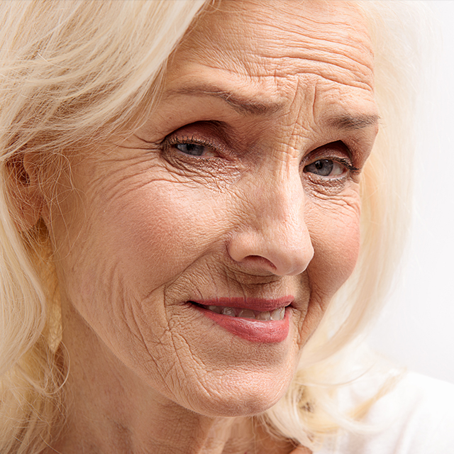

If you have several of these symptoms, it’s possible that you are suffering from hormone imbalance.
Don't be dragged down by imbalance. Visit us for a consultation.
Your hormonal system is one of the important regulatory systems in your body. They act as messengers, designed to interact with specific target cells and organs and provoke a change or result. As we age, hormone production changes, and hormonal imbalance can occur as a result. Unbalanced hormones can have a variety of side effects and symptoms.
Biote is a human-identical hormone subcutaneous pellet therapy to help NATURALLY balance hormones in both women and men.
Pellet therapy uses hormones derived from natural plant sources to replicate the body’s normal hormonal levels. Patients have found that bio-identical hormone replacement therapy with pellet implants is extremely effective. Implants, placed under the skin, consistently release small, physiologic doses of hormones that provide optimal therapy.
{% include svgs/logo.html %} is a certified Biote Medical provider that offers BHRT pellet therapy, nutraceuticals and a high-quality standard of care to patients.
Unlike typical oral and transdermal forms of hormone therapy — which produce “roller coaster” hormone levels, resulting in mood and energy fluctuations for the patient — Biote medical hormone pellet therapy is the only method of hormone therapy that provides sustained hormone levels throughout the day for up to three to five months without any “roller coaster” effect.
Breast Cancer is the most common primary malignancy and second leading cause of death from malignancy in women. One common concern is that synthetic hormones can actually increase the risk of breast cancer, but on the contrary, bio-identical hormones are breast cancer PROTECTIVE. See literature here: "Reduced Breast Cancer Incidence in Women Treated with Subcutaneous Testosterone," "Breast cancer in women treated with testosterone implants 10-year study," "Breast Cancer Incidence Reduction in Women Treated with Subcutaneous Testosterone," "Androgens and the Breast."
Because the hormones used are completely natural, pellet therapy is ideal for patients who want the benefits of a natural hormone without the drawbacks of a synthetic.
Hormone Deficiency Increases Your Risk of:

For women: $399 for the initial pellet, and then $299 afterwards.
For men: $799 for the initial pellet, and then $699 afterwards.
This price includes pellet insertion PLUS a bottle of the specially formulated DIM nutraceutical, which keeps testosterone from being converted to estrogen. This optimizes your pellets and promotes beneficial estrogen metabolism and helps restore a healthy hormonal balance.
Each patient is screened based on both subjective factors (your symptoms) and objective (lab testing of your hormone levels). Dosing is based on getting your hormones to an optimal level.
We will do follow up labs and assessment after pelleting to adjust your dosage. Be sure to take your DIM, stay hydrated and at least moderately active for best results.
There is a pinch, similar to getting a shot in your behind.
About 3 months for women, or 6 months for men. Your activity level and particular physical needs will determine how long pellets last. Most people can identify when they are in need of re-pelleting, because their symptoms pre-pellets start to return.
The insertion site will be covered with two layers of bandages. Do not remove either bandage at ALL for 7 days. No tub baths, hot tubs, or swimming pools for 5-7 days. You may shower. No major lower-body exercise for 7 days.
A significant hormonal transition will occur in the first four weeks after the insertion of your hormone pellets. Therefore, certain changes might develop that can be bothersome.
FLUID RETENTION: Testosterone stimulates the muscle to grow and retain water which may result in a weight change of two to five pounds. This is only temporary. This happens frequently with the first insertion, and especially during hot, humid weather conditions.
SWELLING of the HANDS & FEET: This is common in hot and humid weather. It may be treated by drinking lots of water, reducing your salt intake, taking cider vinegar capsules daily, (found at most health and food stores) or by taking a mild diuretic, which the office can prescribe.
MOOD SWINGS/IRRITABILITY: These may occur if you were quite deficient in hormones. They will disappear when enough hormones are in your system.
FACIAL BREAKOUT: Some pimples may arise if the body is very deficient in testosterone. This lasts a short period of time and can be handled with a good face cleansing routine, astringents and toner. If these solutions do not help, please call the office for suggestions and possibly prescriptions.
HAIR LOSS: Is rare and usually occurs in patients who convert testosterone to DHT. Dosage adjustment generally reduces or eliminates the problem. Prescription medications may be necessary in rare cases.
Women: HAIR GROWTH: Testosterone may stimulate some growth of hair on your chin, chest, nipples and/or lower abdomen. This tends to be hereditary. You may also have to shave your legs and arms more often. Dosage adjustment generally reduces or eliminates the problem.
Women: UTERINE SPOTTING/BLEEDING: This may occur in the first few months after an insertion, especially if you have been prescribed progesterone and are not taking properly: i.e. missing doses, or not taking a high enough dose. Please notify the office if this occurs. Bleeding is not necessarily an indication of a significant uterine problem. More than likely, the uterus may be releasing tissue that needs to be eliminated. This tissue may have already been present in your uterus prior to getting pellets and is being released in response to the increase in hormones.